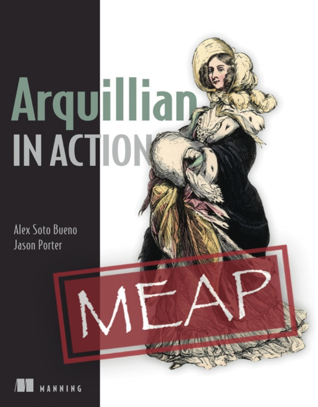

Secrets are secrets. Please maintain them as secrets.


Who Encrypt Passwords in Resource Files?
Apache TomEE Resources
<Resource id=”myds” type=”DataSource”>
JdbcDriver = org.hsqldb.jdbc.JDBCDriver
JdbcUrl = jdbc:hsqldb:mem:my-datasource
Username = SA
Password = SA
</Resource>
Apache TomEE Resources
<Resource id=”myds” type=”DataSource”>
JdbcDriver = org.hsqldb.jdbc.JDBCDriver
JdbcUrl = jdbc:hsqldb:mem:my-datasource
Username = SA
Password = xMH5uM1V9vQzVUv5LG7YLA==
PasswordCipher = AES
</Resource>
<Resource id=”myresource” class-name="org.superbiz.VaultGateway">
//.....
VaultPassword = cipher:AES:xMH5uM1V9vQzVUv5LG7YLA==
</Resource>
Implementation
public AESPasswordCipher() {
this.key = readKeyFromDisk();
this.secretKey = new SecretKeySpec(key, "AES");
}
public String decrypt(char[] chars) {
Cipher cipher = Cipher.getInstance("AES");
cipher.init(Cipher.DECRYPT_MODE, secretKey);
byte[] raw = Base64.getDecoder().decode(toByteArray(chars));
byte[] stringBytes = cipher.doFinal(raw);
String clearText = new String(stringBytes, "UTF8");
return clearText;
}
public char[] encrypt(String s) {}
Chicken-Egg Problem
Monolith Application
MicroServices?
A tool for managing secrets
https://vaultproject.io/
Vault Features
- Secure Secret Storage
- Dynamic Secrets
- Data Encryption
- Leasing, Renewing, Revocation
- Auditing
- ACL
- Multiple Authentication Methods
- REST API
Microservices approach
APPID Auth
App ID
- Random Unique Chunk
- Unique to Application (aka Service)
- Generated by Operator
- Stored in Configuration Management
User ID
- Intrinsic Properties
- Unique to Instance
- Generated by Cloud Init Script
Each Service
login
with Tuple
{AppID, UserID}
Let's wind
down
Vault is a Service
There is NO Silver Bullet